Douze modèles d'offre : reprise après tes réponses
Reprise du 19 novembre 2026. En haut, ce qui est réglé, avec tes mots, sans boutons. Restent ouverts : deux totaux retouchés, deux modèles pour remplacer Métré et En bloc, et les options et variantes. Ta réponse se pose sous chaque image ; « Copier le texte » est tout en bas.
Données inventées : entreprises, logos, clients, prix, IDE, IBAN. Aucune feuille n'est encore passée par le générateur de PDF de l'application. La première planche reste dans MAQUETTE-modeles.html.
Réglé
- Bandeau, Atelier refaits :
Valider
- Technique refait :
Valider · attention au bordure foncé le total ttc il fut que le haut soit aussi foncé
. Corrigé, image ci-dessous. - Sobre refait :
Valider · total en noir/anthracite car sinon le contraste peut être mauvais
. Corrigé, image ci-dessous. - Polices intégrées, chantier, non compris, deux signatures, pied avec IBAN et page, adresse à la même place (C1 à C6) :
Valider
- Lettre, Latéral, Récapitulatif, Chantier :
Garder
- Métré, En bloc :
Écarter
. Retirés de la planche et de la source. - Nombre de modèles :
Douze · ajoute la possibilité d'avoir des options et variantes a prendre en compte dans la dicté.
- Modèle proposé selon le métier, quatre familles :
Valider
Ma lecture, à corriger si elle est fausse : tu n'as rien coché sous les six modèles refaits dans la planche des douze ; je les compte comme gardés, puisque tu les as validés ou demandés en retouche plus haut.
Les deux corrections demandées
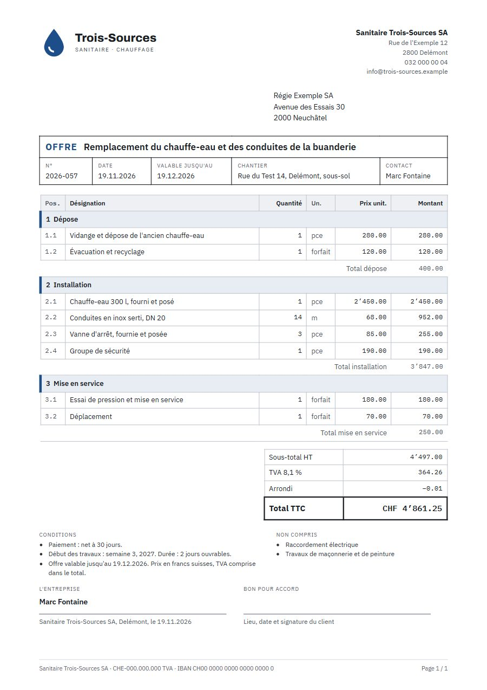
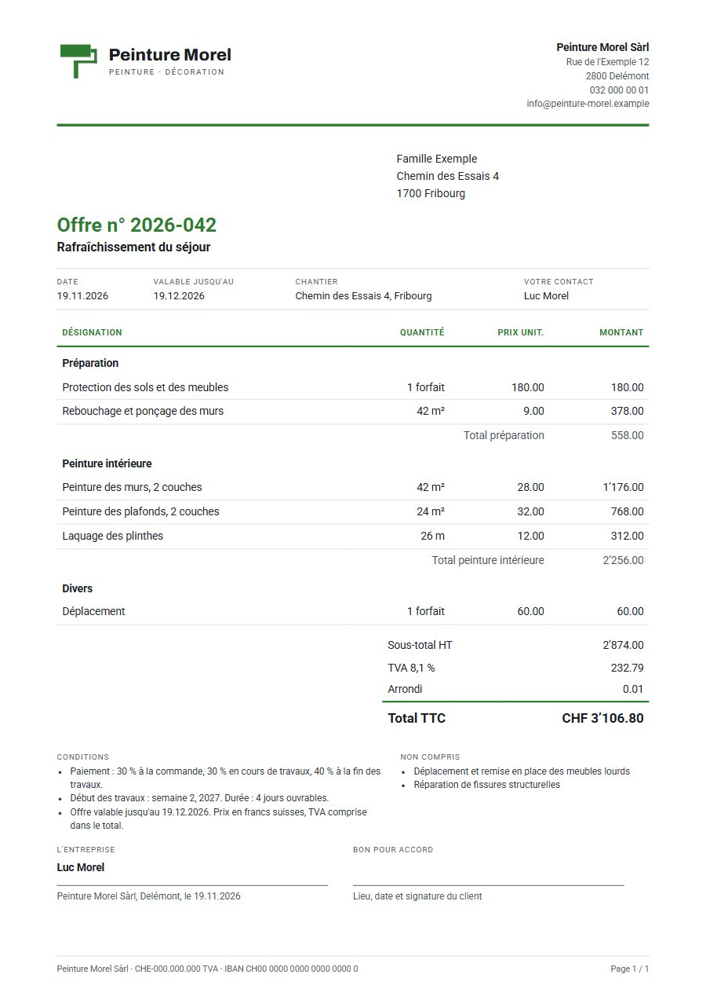
Pour ton information : l'application assombrit déjà la couleur de l'artisan jusqu'à un contraste de 4,5 sur le blanc avant de l'employer pour du texte. Le total en anthracite reste le choix le plus sûr, et il est appliqué.
Deux totaux retouchés
Moderne
Ta remarque : « total ttc trop gros ça fais gros point noir changer ce petit aspect »

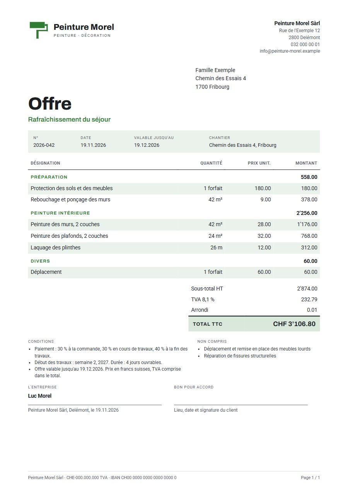
Le bloc noir a disparu. Le total est écrit en anthracite sur la teinte de l'artisan, sous un filet foncé, deux points plus petit.
Épuré
Ta remarque : « total un peut trop grand »
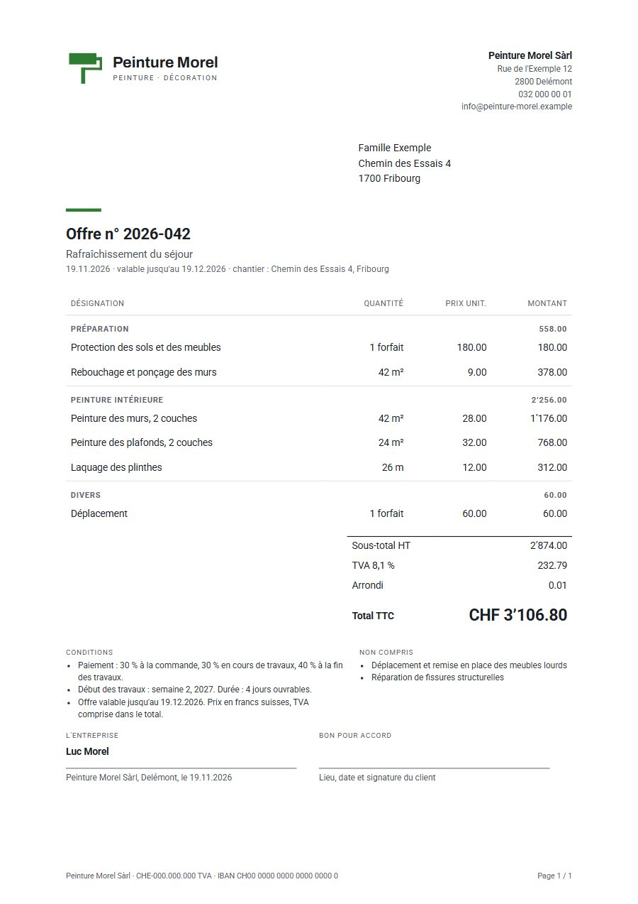
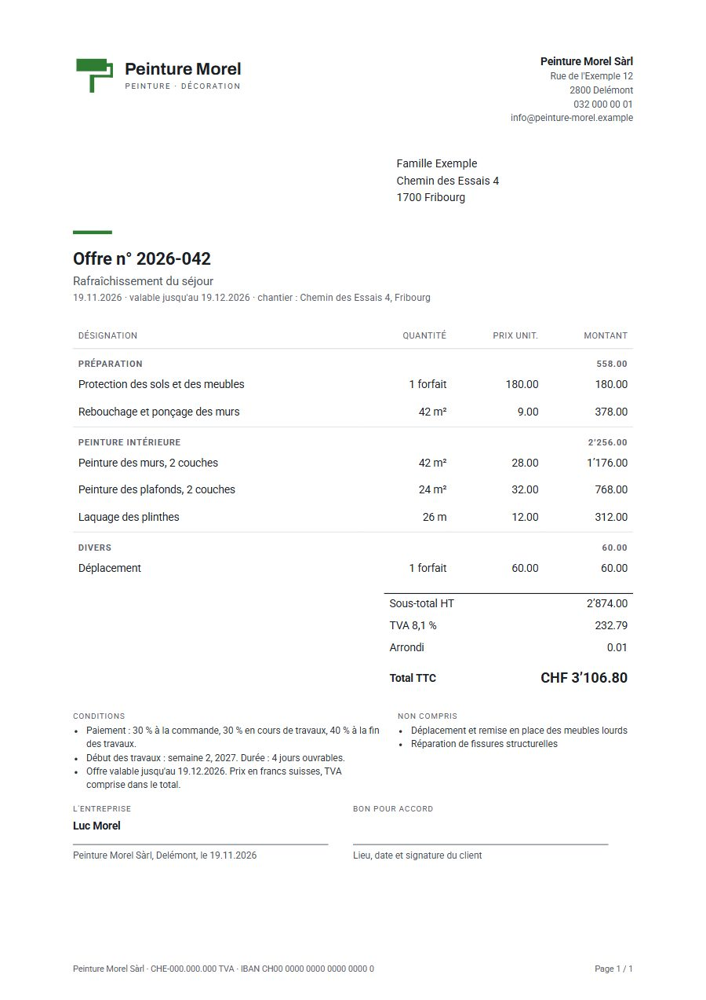
Deux modèles pour revenir à douze
Tu veux douze modèles et tu en écartes deux : il en reste dix. Voici deux propositions pour les places libres. Elles se contentent des données communes déjà validées, sans champ propre. Si dix te suffisent, écarte-les.
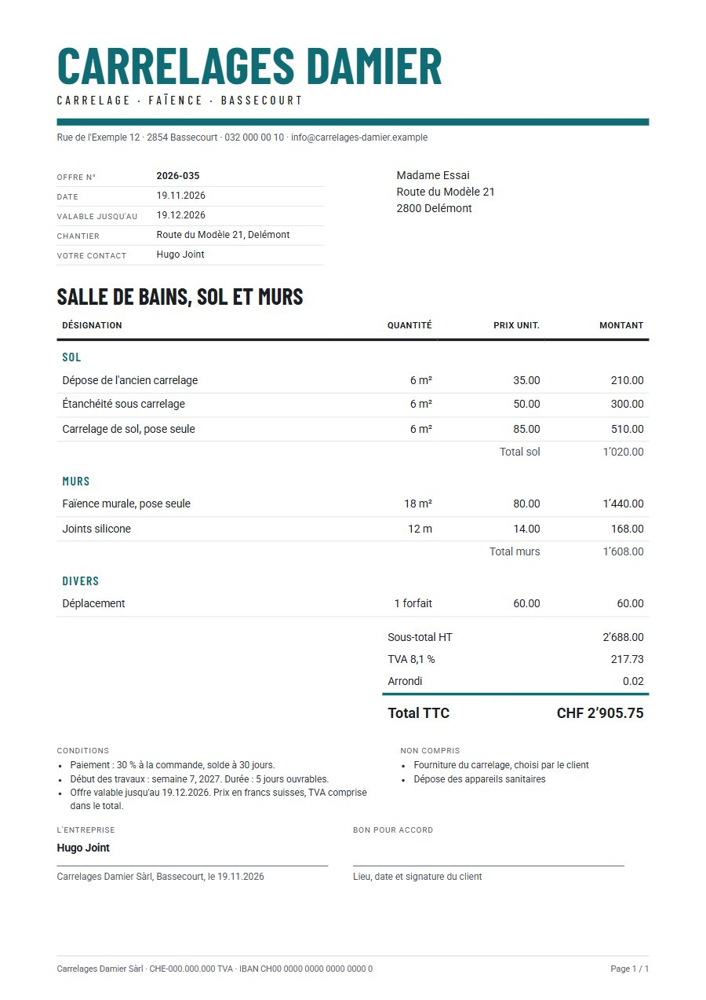
Enseigne
Pour : l'artisan qui n'a pas de logo. Aujourd'hui son nom sort en petit gras à la place du logo.
Structure : le nom de l'entreprise en très grand, dans sa couleur, comme l'enseigne au-dessus de l'atelier ; métier et lieu dessous ; barre de couleur ; bloc de références à gauche de l'adresse.
Question que ce modèle pose : il faut un nom court dans les réglages (« Carrelages Damier » sans « Sàrl »), sinon un nom long déborde.
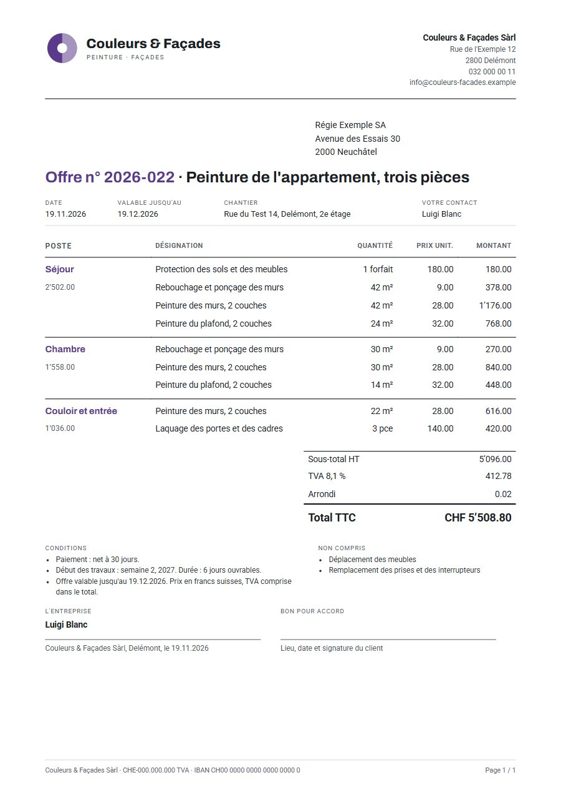
Marge
Pour : peintre, plâtrier, poseur de sols : l'offre par pièce, en version aérée.
Structure : chaque pièce et son total dans la marge de gauche, les lignes à droite, un filet entre deux pièces. Le client lit la colonne de gauche et connaît le prix de chaque pièce.
À prouver : la case de la marge quand une pièce passe d'une page à l'autre dans le PDF.
Options et variantes
Ta demande : « ajoute la possibilité d'avoir des options et variantes a prendre en compte dans la dicté ». Ce sont des fonctions de l'offre, valables pour les douze modèles. Elles touchent la dictée, le calcul, l'écran et le document. Voici le document ; chaque règle demande ta décision.
Sur le document
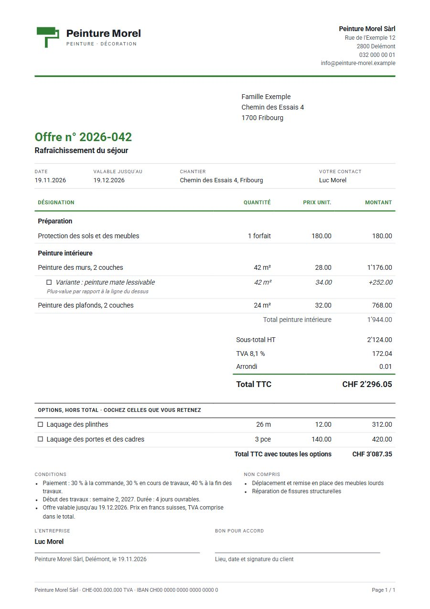
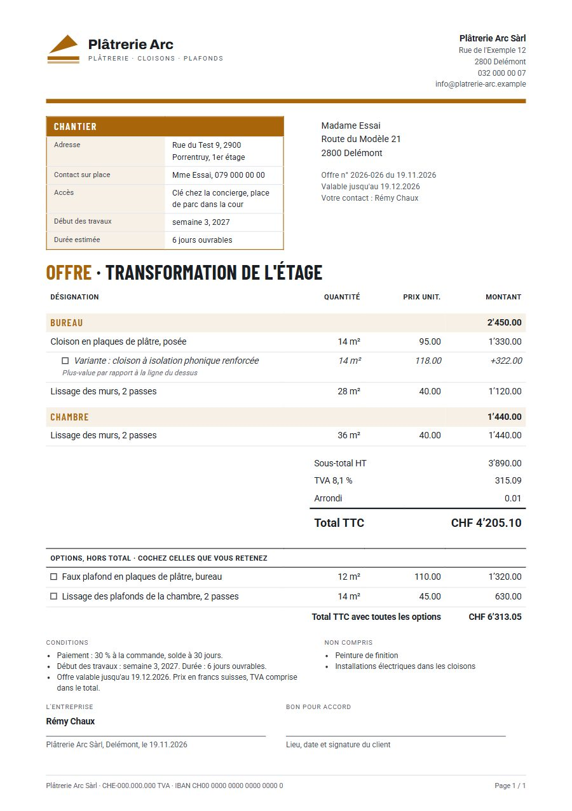
Les deux offres d'exemple sont raccourcies pour tenir sur une page : une offre avec options et variantes sera plus longue.
O1 · L'option
Un travail en plus que le client peut prendre ou laisser. Elle reste hors du total. Elle sort dans un bloc à part, sous le total, avec une case à cocher et son montant. Une dernière ligne donne le total si le client prend tout.
O2 · La variante
Une autre façon de faire une ligne de l'offre : une peinture lessivable à la place de la peinture standard. Elle sort sous la ligne qu'elle remplace, en italique, avec une case à cocher, son prix unitaire et l'écart : « +252.00 », plus-value ou moins-value. Le total de l'offre compte la ligne de base.
O3 · Dans la dictée
| L'artisan dit | L'offre reçoit |
|---|---|
| « En option, laquage des portes, trois pièces à cent quarante francs. » | Une option : Laquage des portes, 3 pce, 140.00. |
| « Variante pour les murs : peinture lessivable à trente-quatre francs le mètre carré. » | Une variante de la ligne « Peinture des murs », même quantité, 34.00. |
| « Ou alors du vinyle à la place du parquet. » | Une variante de la ligne du parquet, marquée « À vérifier » : le prix manque. |
| « Et peut-être les plinthes, à voir avec le client. » | Une option marquée « À vérifier » : la quantité et le prix viennent du catalogue. |
Mots reconnus : « en option », « option », « variante », « en variante », « ou alors », « à la place de ». Une variante sans ligne de base retrouvée devient une option « À vérifier ».
O4 · À l'écran, sans la voix
La règle du projet veut que toute correction vocale ait son équivalent à l'écran. Sur une ligne de l'offre : un toucher pour la passer en option, un pour la remettre dans le total ; « Ajouter une variante » depuis la ligne.
O5 · Quand le client accepte
L'artisan coche dans l'application les options et variantes retenues. Le total se recalcule, et la facture créée depuis l'offre reprend ce qui est coché. Sans cette étape, la facture ignore ce que le client a choisi.
Ce que ça demande, et un risque
- Données : chaque ligne reçoit un état (dans le total, option, variante) et, pour une variante, la ligne qu'elle remplace.
- Calcul : les options et les variantes sortent du total, de la TVA et de l'acompte.
- Document : les deux blocs ci-dessus, dans les douze modèles, en offre.
- Dictée : la consigne d'extraction change. Le sous-chantier 29 demande un banc lancé avant chaque changement de consigne, sur un corpus de vraies dictées ; sa tâche est encore ouverte dans Origin. Les cas « option » et « variante » doivent entrer dans ce corpus : une nouvelle source d'erreurs se mesure avant d'être ajoutée.
Mon avis : c'est un chantier à part, plus gros que les modèles. Je propose de le cadrer après tes réponses, avec sa propre spécification.
Les douze, à ce jour
Dix réglés, deux en attente de ta réponse (Enseigne, Marge). Clique une image pour la lire en grand.
Sobre Validé
Pour : tous les métiers. Le modèle par défaut.

Lettre Gardé
Pour : ferblantier, couvreur, artisan qui écrit aux régies.
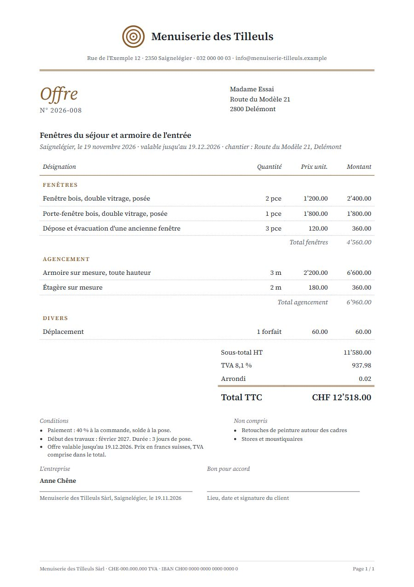
Atelier Validé
Pour : menuisier, ébéniste, agenceur.

Bandeau Validé
Pour : maçon, gros œuvre, façadier.
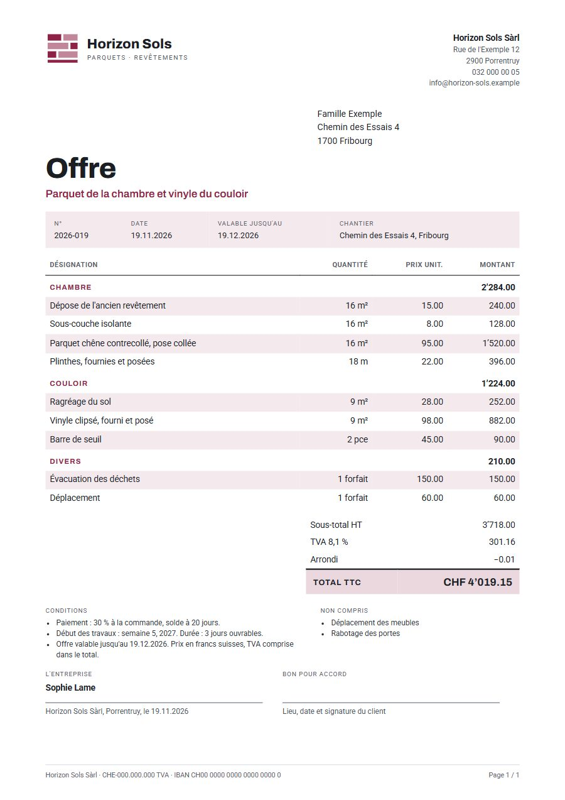
Moderne Total retouché
Pour : poseur de sols, cuisiniste, agencement.

Latéral Gardé
Pour : électricien, stores, cuisines.
Enseigne À décider
Pour : l'artisan sans logo.
Technique Validé
Pour : sanitaire, chauffage, ventilation, électricité.
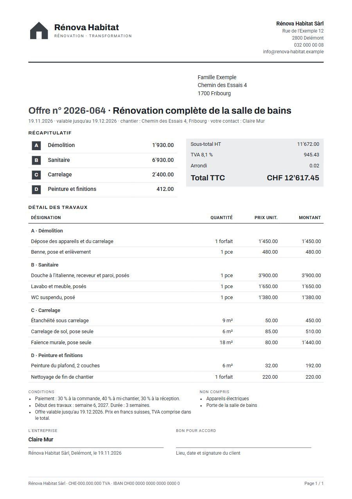
Récapitulatif Gardé
Pour : rénovation complète, plusieurs corps de métier.
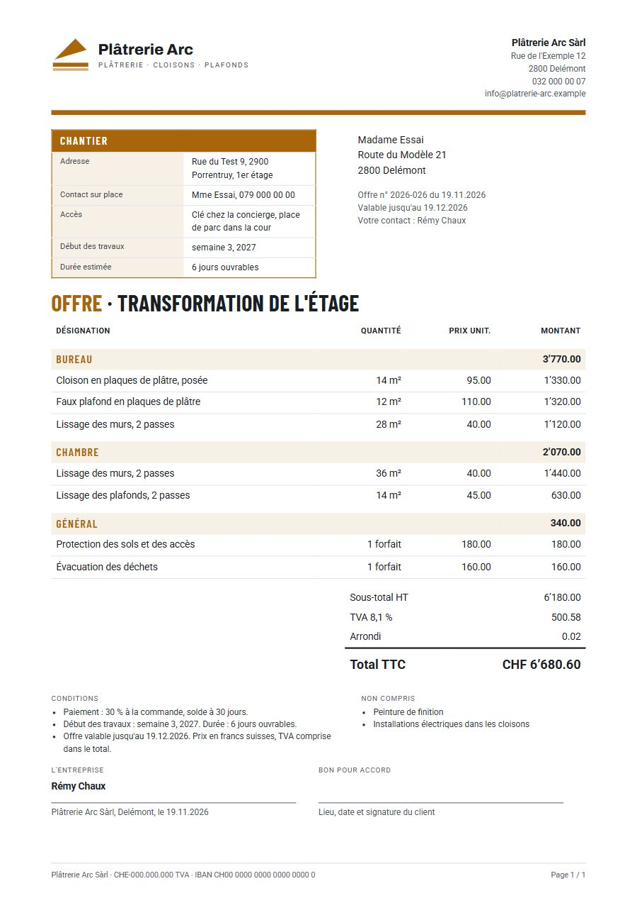
Chantier Gardé
Pour : plâtrier, peintre, rénovation d'appartement.
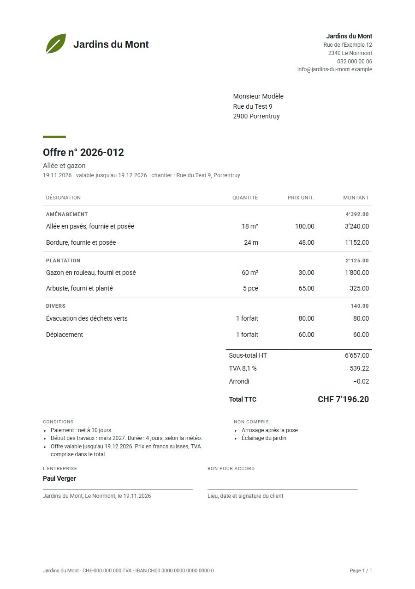
Épuré Total retouché
Pour : paysagiste, indépendant, petite offre.
Marge À décider
Pour : peintre, plâtrier, offre par pièce aérée.
La suite
- Un PDF d'essai par le générateur de l'application : polices intégrées, bande de Bandeau d'un bord à l'autre, colonne de Latéral répétée, case de Marge sur deux pages, offre de quarante lignes.
- Une impression pliée dans une enveloppe à fenêtre.
- Les champs communs validés (chantier, début, durée, non compris, contact), puis les gabarits un par un.
- Les factures des douze, avec la section de paiement QR.
Toujours sans preuve : le rendu PDF, un logo réel d'artisan, une couleur claire, l'avis d'un artisan.
Tes réponses